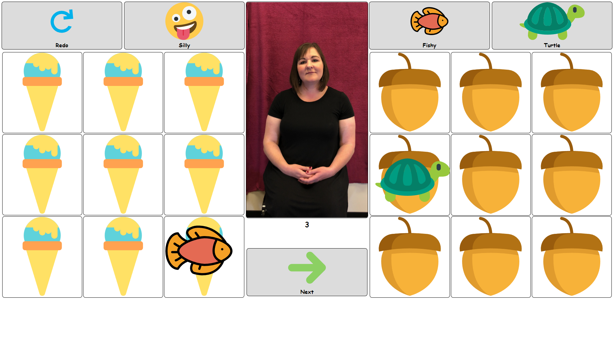
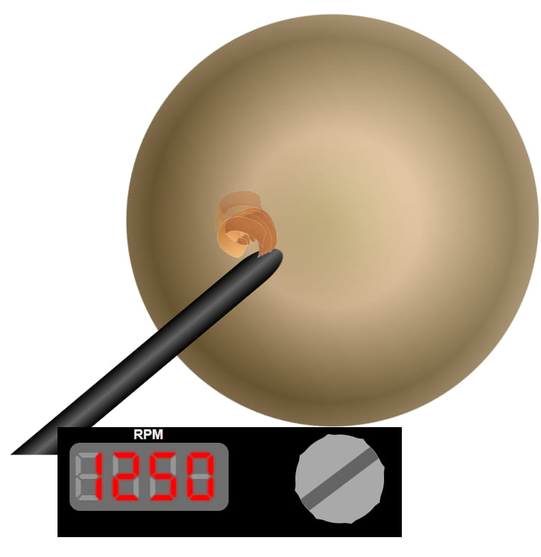
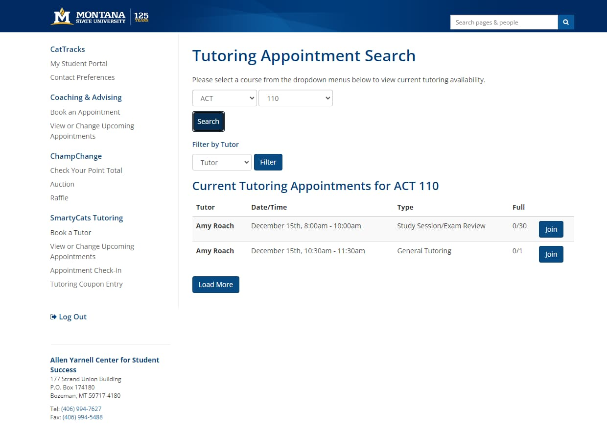
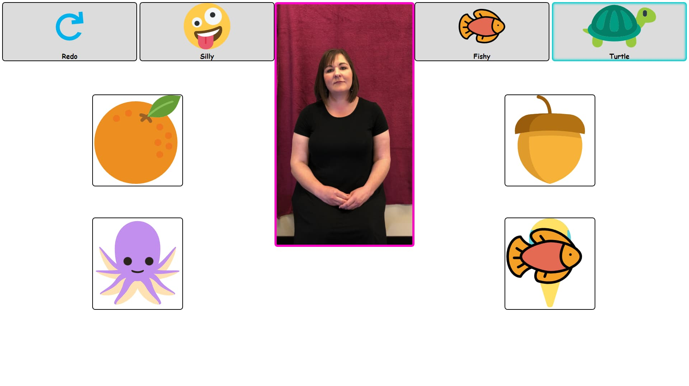
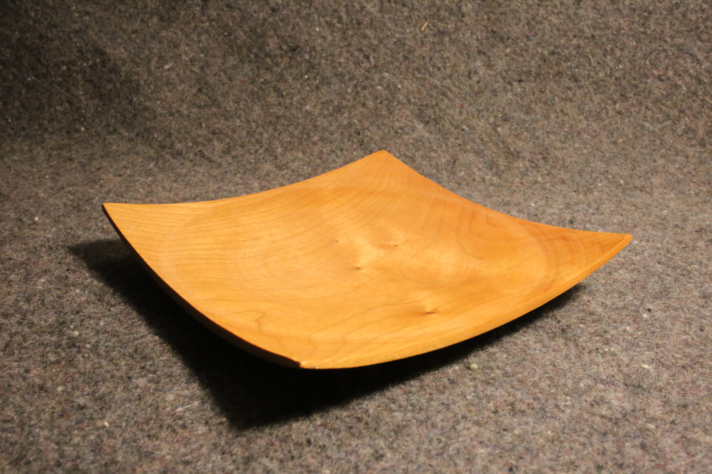
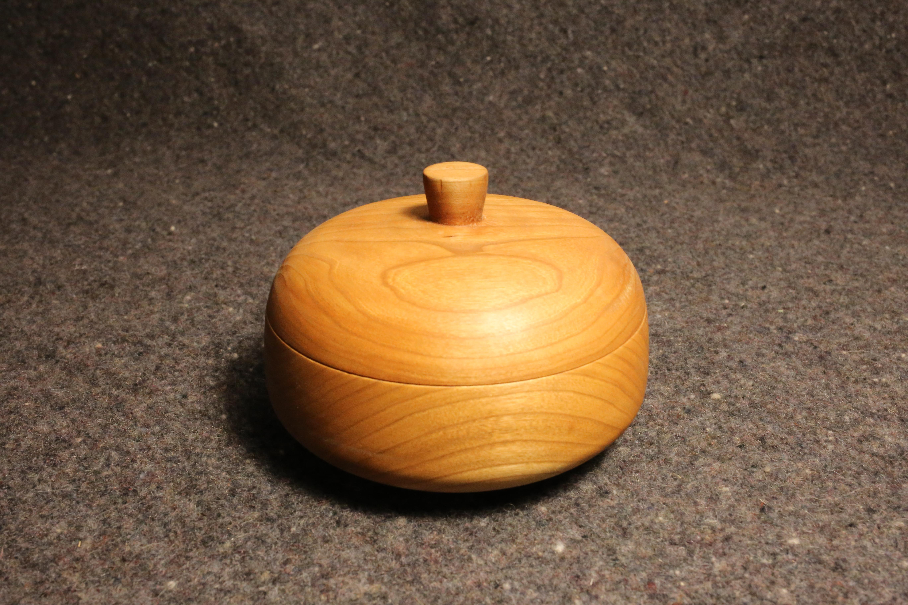
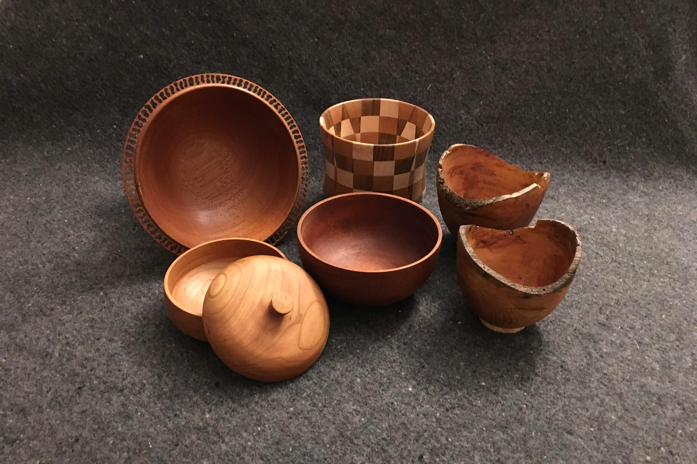
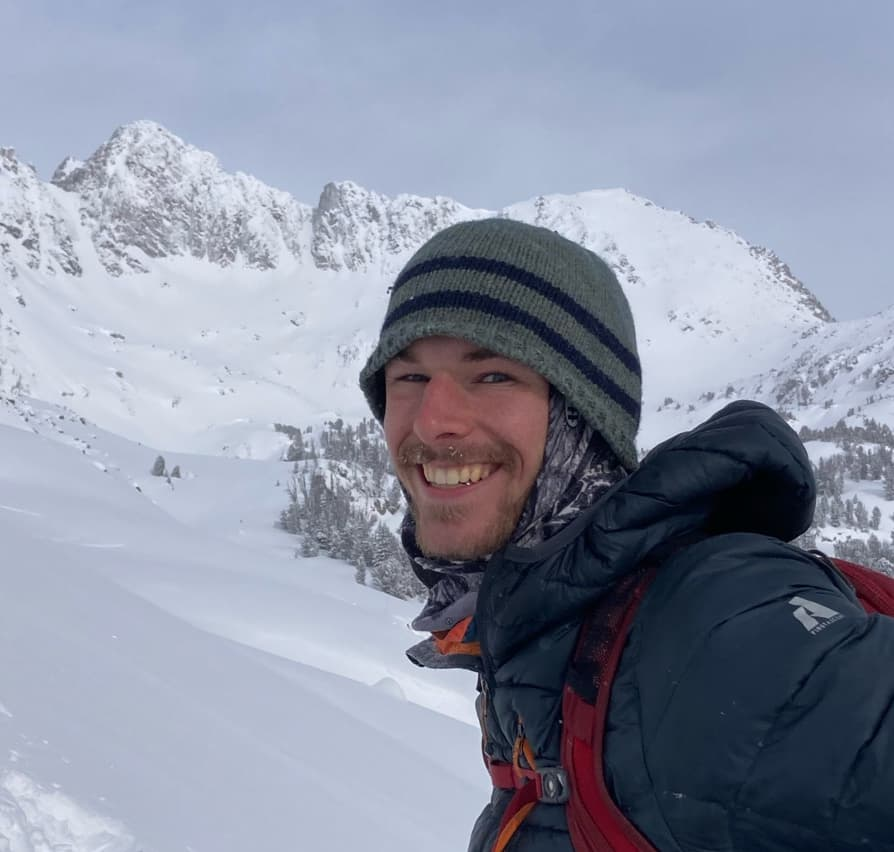

I am a student developer for the Student Success Center at Montana State University.
Fishy Turtle

I am the solo developer of this app supporting work at the Pennington Educational Research Laboratory.
CSS Animations

Recently, I have been exploring CSS animations. Here is a wood lathe with a functional RPM controller.
Git Hub
Find the source code for this website and many other of my projects.
Champ Change

I work on the student success centers website where students book tutoring and advising appointments.
Additionally, the website handles on campus events and provides extensive reports of engagements. Contributing
to a 10+ year old LAMP stack has developed my skills to work on large scale projects and write maintainable code.
Fish Turtle

This app engages children with developmental conditions and records how they react to various prompts and
gestures. After the activities an output file is generated that is then is paired with eye tracking software.
Through this Project I have developed my full stack Javascript skills by creating a windows native electron app.
CSS Animations
RPM
8
8
8
8
2
8
0
0
Git Hub
As my web development skills grow, I update this website. All the source code is on my GitHub page as well as other non web based projects.
Woodworking



Woodworking has long been a hobby of mine. For the last few years, I
have focused on honing my wood turning skills. Starting with locally
sourced lumber, the process of transforming it to a polished
finished product has become a passion. It requires unwavering
attention and precision. I enjoy celebrating the character of the
wood, experimenting with form and proportion to make useful,
beautiful objects.
About

I am a junior studying Computer Science at Montana State University.
I grew up in Portland, Maine, where I took full advantage of easy
access to the great outdoors spending time across the state from the waters of Casco
Bay to the peaks of Baxter State Park.
My collage years in Montana have given me ready access to the Rocky Mountains where I climb, ski, mountain bike,
and explore the great outdoors. I also play Ultimate frisbee and am a team captain at Montana State.
I enjoy strategy games and lead a weekly game night. In addition, I host and maintain a dedicated server for gamming.
I am a strong team player but am also comfortable striking out on my
own to accomplish the task at hand. I bring a can-do attitude, strong
work ethic and am able to organize and lead groups to work effectively
together.